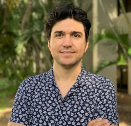

E. Deniz Gedikli
I am an Associate Professor of Ocean and Resources Engineering at the University of Hawaiʻi at Mānoa, where I direct the Fluid-Structure Interactions and Nonlinear Dynamics Laboratory. I study how waves, currents, and ice interact with flexible structures, with applications to offshore engineering and marine renewable energy. My work combines laboratory experiments, numerical modeling, and data analysis to understand the dynamics of fluid–body interactions.